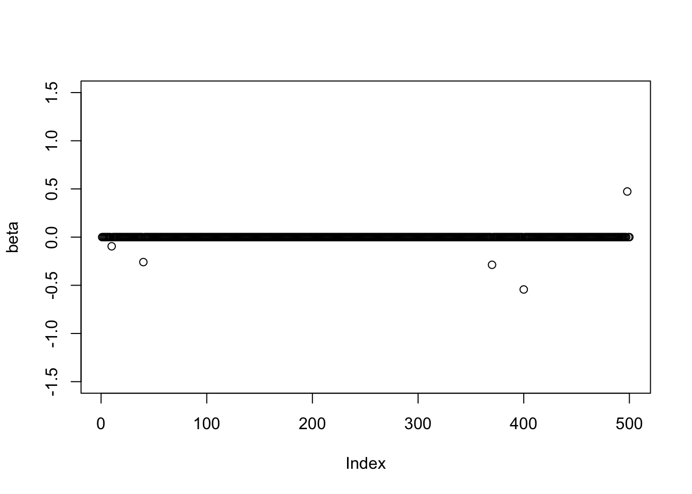
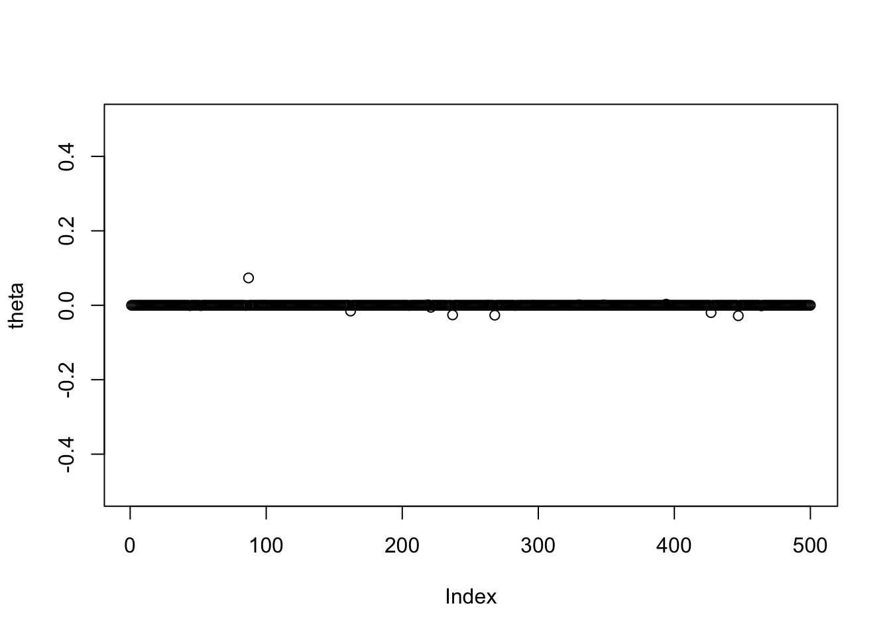

Last updated: 2024-03-31
Checks: 6 1
Knit directory: SuSiE-ASH/
This reproducible R Markdown analysis was created with workflowr (version 1.7.1). The Checks tab describes the reproducibility checks that were applied when the results were created. The Past versions tab lists the development history.
Great! Since the R Markdown file has been committed to the Git repository, you know the exact version of the code that produced these results.
Great job! The global environment was empty. Objects defined in the global environment can affect the analysis in your R Markdown file in unknown ways. For reproduciblity it’s best to always run the code in an empty environment.
The command set.seed(20240328) was run prior to running
the code in the R Markdown file. Setting a seed ensures that any results
that rely on randomness, e.g. subsampling or permutations, are
reproducible.
Great job! Recording the operating system, R version, and package versions is critical for reproducibility.
Nice! There were no cached chunks for this analysis, so you can be confident that you successfully produced the results during this run.
Using absolute paths to the files within your workflowr project makes it difficult for you and others to run your code on a different machine. Change the absolute path(s) below to the suggested relative path(s) to make your code more reproducible.
| absolute | relative |
|---|---|
| /Users/alexmccreight/Columbia/Research/SuSiE-ASH/SuSiE-ASH/submodules/susieR | submodules/susieR |
| /Users/alexmccreight/Columbia/Research/SuSiE-ASH/SuSiE-ASH/submodules/mr.ash.alpha | submodules/mr.ash.alpha |
| /Users/alexmccreight/Columbia/Research/SuSiE-ASH/SuSiE-ASH/code/SuSiE-ASH-Versions/susie-ash-warmstart-v1.R | code/SuSiE-ASH-Versions/susie-ash-warmstart-v1.R |
| /Users/alexmccreight/Columbia/Research/SuSiE-ASH/SuSiE-ASH/code/SuSiE-ASH-Versions/susie-ash-warmstart-v2.R | code/SuSiE-ASH-Versions/susie-ash-warmstart-v2.R |
Great! You are using Git for version control. Tracking code development and connecting the code version to the results is critical for reproducibility.
The results in this page were generated with repository version b2dd61f. See the Past versions tab to see a history of the changes made to the R Markdown and HTML files.
Note that you need to be careful to ensure that all relevant files for
the analysis have been committed to Git prior to generating the results
(you can use wflow_publish or
wflow_git_commit). workflowr only checks the R Markdown
file, but you know if there are other scripts or data files that it
depends on. Below is the status of the Git repository when the results
were generated:
Ignored files:
Ignored: .DS_Store
Ignored: .Rhistory
Ignored: .Rproj.user/
Ignored: analysis/.DS_Store
Ignored: analysis/figure/
Ignored: code/.DS_Store
Ignored: code/SuSiE-ASH-Versions/.DS_Store
Ignored: submodules/.DS_Store
Note that any generated files, e.g. HTML, png, CSS, etc., are not included in this status report because it is ok for generated content to have uncommitted changes.
These are the previous versions of the repository in which changes were
made to the R Markdown (analysis/Simulation.Rmd) and HTML
(docs/Simulation.html) files. If you’ve configured a remote
Git repository (see ?wflow_git_remote), click on the
hyperlinks in the table below to view the files as they were in that
past version.
| File | Version | Author | Date | Message |
|---|---|---|---|---|
| Rmd | b2dd61f | alexmccreight | 2024-03-31 | Start my new project |
| Rmd | 980dab9 | alexmccreight | 2024-03-28 | added coverage metric |
| Rmd | 9694824 | alexmccreight | 2024-03-28 | add cs size metric |
| Rmd | 8824c5a | alexmccreight | 2024-03-28 | organization |
Note-to-self: - Recall/Power = Percentage of simulated LARGE EFFECTS among the top N variants when ranked by PIP (Note that recall for SuSiE-Inf was very similar to, but slightly lower than the recall of SuSiE) - False Discovery Rate = P(Non-Causal | PIP > 0.9) - Calibration = Of variants with PIP = x%, we expect x% are truly causal - Replication Failure Rate = P(PIP Large Sample < 0.1 | PIP Small Sample > 0.9) - Expected Proportion of Non-Causal Variants (EPN) –> Supp table 6,7,8 - Coverage: proportion of variants with nonzero effects - Heritability: proportion of outcome variance that can be attributed to genetic effects (our betas and thetas)
If the RFR is significantly higher than the EPN, it suggests miscalibration.
generate_data <- function(n, p, heritability, sparse_coverage, nonsparse_coverage) {
# Generate sparse effects (beta.true)
num_sparse <- round(p * sparse_coverage)
beta.true <- rep(0, p)
#beta.true[sample(p, num_sparse)] <- rnorm(num_sparse, 0, 0.5)
beta.true[sample(p, num_sparse)] <- rbinorm(num_sparse, mean1 = 0.4, mean2 = -0.4, sd1 = 0.15, sd2 = 0.2, prop = 0.5)
# Generate nonsparse effects (theta.true)
num_nonsparse <- round(p * nonsparse_coverage)
theta.true <- rep(0, p)
# Set the mixture prior parameters for nonsparse effects
nonsparse_pis <- c(0.5, 0.3, 0.15, 0.05)
#nonsparse_sds <- c(0.0001, 0.002, 0.05, 0.1) # William Mixture
#nonsparse_sds <- c(0.0001, 0.005, 0.0075, 0.05)
nonsparse_sds <- c(0.0001, 0.002/2, 0.05/2, 0.1/2)
theta.true[sample(p, num_nonsparse)] <- sapply(1:num_nonsparse, function(i) {
dist.sel <- runif(1)
if (dist.sel < nonsparse_pis[1]) {
val <- 0
} else if (dist.sel < sum(nonsparse_pis[1:2])) {
val <- rnorm(1, 0, nonsparse_sds[2])
} else if (dist.sel < sum(nonsparse_pis[1:3])) {
val <- rnorm(1, 0, nonsparse_sds[3])
} else {
val <- rnorm(1, 0, nonsparse_sds[4])
}
val
})
# Create Design Matrix
X <- cbind(matrix(rnorm(n*p),nrow=n))
X <- scale(X, center=TRUE, scale=FALSE)
# Create Residual Error
sigmasq_error <- (var(X %*% beta.true)*(1 - heritability)) / heritability
# Create Outcomes
y <- X%*%matrix(beta.true,ncol=1) + X%*%matrix(theta.true,ncol=1) + rnorm(n,0,sqrt(sigmasq_error))
y <- scale(y, center=TRUE, scale=FALSE)
# Store Information
return(list(X = X, y = y, error = sigmasq_error, beta = beta.true, theta = theta.true))
}
data <- generate_data(n = 10000, p = 500, heritability = 0.75, sparse_coverage = 0.01, nonsparse_coverage = 0.1)
plot(data$beta, ylim = c(-1.5,1.5), ylab = "beta")
plot(data$theta, ylim = c(-.5,.5), ylab = "theta")
# output <- susie_ash_warmstart(X = data$X, y = data$y, L = 10, tol = 0.02)
# output2 <- susie(X = data$X, y = data$y, L = 10, tol = 0.001)
# output3 <- susie_ash_warmstart_re(X = data$X, y = data$y, L = 10, tol = 0.02)
#
# susie_get_cs(output, X = data$X)
#
#
# beta.true.index = which(data$beta != 0)
# theta.true.index = which(abs(data$theta) >= 0.025)
#
# # Color + Shape Differ for True Effects
# color_vector <- rep("black", length(output$pip))
# color_vector[beta.true.index] <- "red"
# shape_vector <- rep(1, length(output$pip))
# shape_vector[beta.true.index] <- 17
#
# color_vector[theta.true.index] <- "blue"
# shape_vector[theta.true.index] <- 16
#
# output$pip %>% plot(., main = "SuSiE-ASH (v2) PIP", col = color_vector, pch = shape_vector) %>% abline(h = 0.9, col="black", lty = 2)
# output2$pip %>% plot(., main = "SuSiE PIP", col = color_vector, pch = shape_vector) %>% abline(h = 0.9, col="black", lty = 2)
# output3$pip %>% plot(., main = "SuSiE-ASH (v1) PIP", col = color_vector, pch = shape_vector) %>% abline(h = 0.9, col="black", lty = 2) method_and_score <- function(X = data$X, y = data$y, beta = data$beta, L = 10, threshold = 0.9) {
# Run various methods
susie_output <- susie(X = X, y = y, L = L)
susie_ash_output_v1 <- susie_ash_warmstart_re(X = X, y = y, L = L, warm_start = 5, tol = 0.03)
susie_ash_output_v2 <- susie_ash_warmstart(X = X, y = y, L = L, warm_start = 5, tol = 0.03)
calc_metrics <- function(mod, beta = data$beta, threshold = 0.9) {
# Identify causal variables (non-zero sparse effects)
causal <- beta != 0
significant <- mod$pip > threshold
# Calculate FDR
fdr <- ifelse(sum(significant) > 0, sum(!causal & significant) / sum(significant), 0)
# Calculate Recall
recall <- ifelse(sum(causal) > 0, sum(causal & significant) / sum(causal), 0)
# Calculate Average CS Size
cs_size <- length(unlist(susie_get_cs(mod, X = data$X, coverage = threshold)$cs)) / length(susie_get_cs(mod, X = data$X, coverage = threshold)$cs)
# Calculate Coverage (proportion of cs with causal effect)
coverage <- sum(which(causal) %in% susie_get_cs(mod, X = data$X, coverage = threshold)$cs) / length(susie_get_cs(mod, X = data$X, coverage = threshold)$cs)
# CS Based FDR and Recall
# test.true <- which(data$X != 0)
# test.cs <- susie_get_cs(mod, X = data$X)$cs
#
# TP = sum(test.true %in% unlist(test.cs))
# FN = length(test.true) - TP
# FP = length(test.cs) - lapply(1:length(test.cs), function(cs.l){ ifelse(sum(test.cs[[cs.l]] %in%test.true)!=0,T,F)}) %>% unlist(.) %>% sum(.) # FP based on CSs
# FP = length(unlist(test.cs)) - sum(unlist(test.cs) %in% test.true) # FP based on elements
#
# cs_fdr = FP/(TP+FP)
# cs_recall = TP/(TP+FN)
return(list(fdr = fdr, recall = recall, cs_size = cs_size, coverage = coverage))#, cs_fdr = cs_fdr, cs_recall = cs_recall))
}
# Calculate FDR and Recall for each method
susie_metrics <- calc_metrics(susie_output, beta, threshold)
susie_ash_v1_metrics <- calc_metrics(susie_ash_output_v1, beta, threshold)
susie_ash_v2_metrics <- calc_metrics(susie_ash_output_v2, beta, threshold)
#Create a data frame with the results
metrics_table <- data.frame(
Model = c("SuSiE", "SuSiE-ASH v1", "SuSiE-ASH v2"),
FDR = c(susie_metrics$fdr, susie_ash_v1_metrics$fdr, susie_ash_v2_metrics$fdr),
Recall = c(susie_metrics$recall, susie_ash_v1_metrics$recall, susie_ash_v2_metrics$recall),
CS_Size = c(susie_metrics$cs_size, susie_ash_v1_metrics$cs_size, susie_ash_v2_metrics$cs_size),
Coverage = c(susie_metrics$coverage, susie_ash_v1_metrics$coverage, susie_ash_v2_metrics$coverage)
#CS_FDR = c(susie_metrics$cs_fdr, susie_ash_v1_metrics$cs_fdr, susie_ash_v2_metrics$cs_fdr),
#CS_Recall = c(susie_metrics$cs_recall, susie_ash_v1_metrics$cs_recall, susie_ash_v2_metrics$cs_recall)
)
# metrics_table <- data.frame(
# Model = c("SuSiE", "SuSiE-ASH"),
# FDR = c(susie_metrics$fdr, susie_ash_v2_metrics$fdr),
# Recall = c(susie_metrics$recall, susie_ash_v2_metrics$recall)
# )
# Return the results table
return(list(
metrics = metrics_table,
susie_output = susie_output,
susie_ash_output_v1 = susie_ash_output_v1,
susie_ash_output_v2 = susie_ash_output_v2,
betas = data$beta,
thetas = data$theta)
)
}
#tmp <- method_and_score()simulate_and_score <- function(num_simulations = 10, n = 10000, p = 500, heritability = 0.75, sparse_coverage = 0.01, nonsparse_coverage = 0.1, L = 10, threshold = 0.9) {
# Initialize lists to store results
all_metrics <- list()
all_betas <- list()
all_thetas <- list()
all_susie_outputs <- list()
all_susie_ash_outputs_v1 <- list()
all_susie_ash_outputs_v2 <- list()
all_seeds <- numeric(num_simulations)
for (i in 1:num_simulations) {
cat("Running simulation", i, "out of", num_simulations, "\n")
# Set random seed for each simulation
seed <- abs(round(rnorm(1, mean = 0, sd = 1000)))
set.seed(seed)
# Generate data
data <- generate_data(n, p, heritability, sparse_coverage, nonsparse_coverage)
# Run methods and calculate metrics
results <- method_and_score(data$X, data$y, data$beta, L, threshold)
# Store results + betas/thetas
all_metrics[[i]] <- results$metrics
all_betas[[i]] <- data$beta
all_thetas[[i]] <- data$theta
all_susie_outputs[[i]] <- results$susie_output
all_susie_ash_outputs_v1[[i]] <- results$susie_ash_output_v1
all_susie_ash_outputs_v2[[i]] <- results$susie_ash_output_v2
all_seeds[i] <- seed
}
# Calculate average metrics
avg_metrics <- data.frame(
Model = unique(all_metrics[[1]]$Model),
FDR = Reduce("+", lapply(all_metrics, function(x) x$FDR)) / num_simulations,
Recall = Reduce("+", lapply(all_metrics, function(x) x$Recall)) / num_simulations,
CS_Size = Reduce("+", lapply(all_metrics, function(x) x$CS_Size)) / num_simulations,
Coverage = Reduce("+", lapply(all_metrics, function(x) x$Coverage)) / num_simulations
#CS_FDR = Reduce("+", lapply(all_metrics, function(x) x$CS_FDR)) / num_simulations,
#CS_Recall = Reduce("+", lapply(all_metrics, function(x) x$CS_Recall)) / num_simulations
)
# Return all results
return(list(
avg_metrics = avg_metrics,
all_metrics = all_metrics,
all_betas = all_betas,
all_thetas = all_thetas,
all_susie_outputs = all_susie_outputs,
all_susie_ash_outputs_v1 = all_susie_ash_outputs_v1,
all_susie_ash_outputs_v2 = all_susie_ash_outputs_v2,
all_seeds = all_seeds
))
}
# large_simulation <- simulate_and_score(num_simulations = 5, n = 10000, p = 500, heritability = 0.75, sparse_coverage = 0.01, nonsparse_coverage = 0.1, L = 10, threshold = 0.9)
#
# print(large_simulation$avg_metrics)
# print(large_simulation$all_seeds)Note-to-self: - Recall/Power = Percentage of simulated LARGE EFFECTS among the top N variants when ranked by PIP (Note that recall for SuSiE-Inf was very similar to, but slightly lower than the recall of SuSiE) - False Discovery Rate = P(Non-Causal | PIP > 0.9) - Calibration = Of variants with PIP = x%, we expect x% are truly causal - Replication Failure Rate = P(PIP Large Sample < 0.1 | PIP Small Sample > 0.9) - Expected Proportion of Non-Causal Variants (EPN) –> Supp table 6,7,8 - Coverage: proportion of variants with nonzero effects - Heritability: proportion of outcome variance that can be attributed to genetic effects (our betas and thetas)
To implement: 1) CS Size, similar to precision
Coverage = proportion of credible sets with a causal effect, 95% coverage want CS with 95% prob of containing a causal effect
ROC curve with FDR vs Power, way of comparing PIP
Coverage versus L (from susie) graph
How does coverage change when we vary heritability versus the amount of actual simulated effects
sessionInfo()R version 4.3.1 (2023-06-16)
Platform: aarch64-apple-darwin20 (64-bit)
Running under: macOS Sonoma 14.1
Matrix products: default
BLAS: /Library/Frameworks/R.framework/Versions/4.3-arm64/Resources/lib/libRblas.0.dylib
LAPACK: /Library/Frameworks/R.framework/Versions/4.3-arm64/Resources/lib/libRlapack.dylib; LAPACK version 3.11.0
locale:
[1] en_US.UTF-8/en_US.UTF-8/en_US.UTF-8/C/en_US.UTF-8/en_US.UTF-8
time zone: America/New_York
tzcode source: internal
attached base packages:
[1] stats graphics grDevices utils datasets methods base
other attached packages:
[1] mr.ash.alpha_0.1-43 susieR_0.14.4 testthat_3.2.1
[4] FamilyRank_1.0 lubridate_1.9.3 forcats_1.0.0
[7] stringr_1.5.1 dplyr_1.1.4 purrr_1.0.2
[10] readr_2.1.4 tidyr_1.3.0 tibble_3.2.1
[13] ggplot2_3.4.4 tidyverse_2.0.0 workflowr_1.7.1
loaded via a namespace (and not attached):
[1] tidyselect_1.2.0 fastmap_1.1.1 reshape_0.8.9 promises_1.2.1
[5] digest_0.6.33 timechange_0.2.0 mime_0.12 lifecycle_1.0.4
[9] ellipsis_0.3.2 processx_3.8.2 magrittr_2.0.3 compiler_4.3.1
[13] rlang_1.1.2 sass_0.4.7 tools_4.3.1 utf8_1.2.4
[17] yaml_2.3.7 knitr_1.45 prettyunits_1.2.0 htmlwidgets_1.6.3
[21] pkgbuild_1.4.2 plyr_1.8.9 pkgload_1.3.3 miniUI_0.1.1.1
[25] withr_2.5.2 desc_1.4.2 grid_4.3.1 fansi_1.0.5
[29] urlchecker_1.0.1 git2r_0.33.0 profvis_0.3.8 xtable_1.8-4
[33] colorspace_2.1-0 scales_1.3.0 cli_3.6.1 rmarkdown_2.25
[37] crayon_1.5.2 generics_0.1.3 remotes_2.4.2.1 rstudioapi_0.15.0
[41] httr_1.4.7 tzdb_0.4.0 sessioninfo_1.2.2 cachem_1.0.8
[45] matrixStats_1.2.0 vctrs_0.6.5 devtools_2.4.5 Matrix_1.6-5
[49] jsonlite_1.8.7 callr_3.7.3 hms_1.1.3 mixsqp_0.3-48
[53] irlba_2.3.5.1 jquerylib_0.1.4 glue_1.6.2 ps_1.7.5
[57] stringi_1.8.2 gtable_0.3.4 later_1.3.1 munsell_0.5.0
[61] pillar_1.9.0 brio_1.1.3 htmltools_0.5.7 R6_2.5.1
[65] rprojroot_2.0.4 evaluate_0.23 shiny_1.8.0 lattice_0.22-5
[69] highr_0.10 memoise_2.0.1 httpuv_1.6.12 bslib_0.6.1
[73] Rcpp_1.0.12 whisker_0.4.1 xfun_0.41 fs_1.6.3
[77] usethis_2.2.2 getPass_0.2-4 pkgconfig_2.0.3